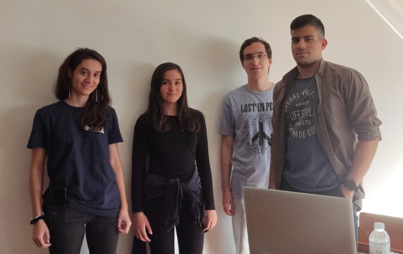

Student Branch News
Here are the latest news of our Student Branch!
4th Dec, 2022
The 1st IEEE Greece Mentoring Program event, for students and graduates!
Event organized in cooperation with:
- IEEE Young Professionals Greece
- IEEE UniWA Student Branch & IEEE NTUA Student Branch
- IEEE WIE Greece
- IEEE Greece Computer Chapter
- IEEE Greece Section
- IEEE Life members Greece
The event took place on December 7, 2022, in the Multimedia Laboratory of the NTUA’s Library & Information Center. We have prepared some interesting speeches to help you promote your career and empower your, to inspire you for your next steps or even… encourage you to participate in the rest of our actions.
Program Contents:
- Introduction to IEEE Greece Mentoring Program
- Mentoring: A relationship which inspires and empowers (Marianna Terzidaki, MSc in Engineering, Career Coach, approved by ICF)
- Live mentoring at the maximum (Ioannis Ipliktsiadis, MSc Electrical Engineer, Technical University of Denmark)
- Stay or leave? The paths after the degree (Kostas Karpouzis, Assistant Professor at the Department of Communication, Media and Culture, Panteion University)
4th Dec, 2022
IEEEXTREME Programming Competition 16.0
Congratulations to Dimitra Motsakou, Evangelos Mitikas and Konstantinos Bandelis, who represented team UniWAPegasus after three years of abstention!
Special thanks to IEEE NTUA SB for their kind hospitality in the National Technical University of Athens!
21st-23nd Oct, 2022
Athens Science Festival 2022
Phoeve Bertsia, Eleni Moniaki and Eleni Agrianiti, volunteers of IEEE UniWA Student Branch, participated in the presentation of IEEE UniWA SB’s projects, in 2022 Athens Science Festival.

8th-9th Oct, 2022
IEEE Greece Section - Lead your Student Branch
We participated in IEEE Greece Section- Lead your Student Branch, Lamia 2022, as well! Phoeve Bertsia, Eleni Moniaki

30th Sept, 2022
Researcher’s Night 2022 of NTUA
The volunteers of UNIWA’s IEEE Student Branch Phoeve Bertsia, Dimitra Motsakou, Nikos Plakas, Henry Gindi, Dimitris Tzagarakis, Christos Tsillis and Thomas Doupis have participated in the presentation of CoNSeRT Lab’s projects, in Researcher’s Night 2022 of NTUA.